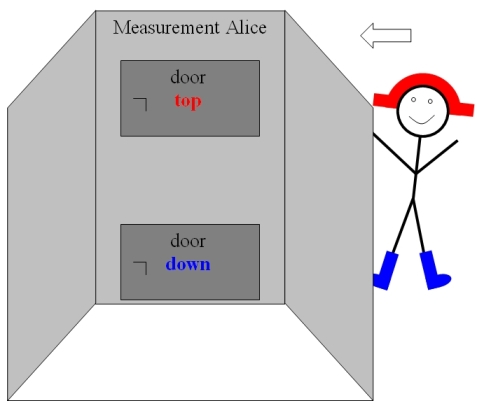
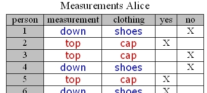
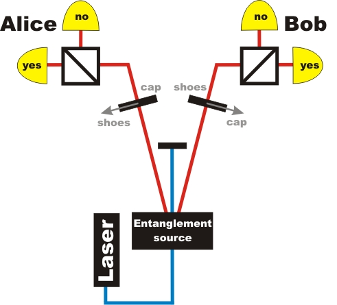
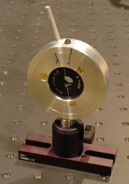

Entanglement chapter 3:
Is entanglement explicable in terms of daily life?
In the previous chapter_2 we have shown that entangled photons are detected behind beam splitters in a correlated way. For example, one can choose entangled state and detector so that the probability for transmission and reflection is equally 50% and the actual path occurs randomly. Surprisingly, both photos are both transmitted or both reflected and it looks like the photons “had agreed on what to do at the beam splitter”. There are various sophisticated schemes to test the so called local realism, i.e. an explanation for the photons’ behaviour based on some hidden local properties at the point of photon pair generation. We present the test after Hardy and show that local realism is not compatible with the measured results. The Hardy test relies on partially entangled photons [Har93]. More information on the mathematical background is given in the advanced section D.
Model out of daily life
Let us take a model out of daily life: Two persons randomly pick together two items of clothing, namely a cap and shoes in a dressing room. Then they walk apart to separate dressing measurement stations with two doors each (fig.1). Alice and Bob are observers of the separate measurement stations. They can open only one door at a time, either to look for the cap or to look for the shoes. The possible measurement results are for the upper door: cap obseverd yes or no, and for the lower door: shoes observed yes or no.

Figure 1: Measurement station of Alice: Two doors for measurement top or down

Figure 2: Measurement results Alice
Alice and Bob do a number of measurements on different test persons, write the measurements into al list (fig. 2) and then they meet to compare their results. They realize the following, depending on their choice of detectors:
rule 1:
Alice looks for the cap and Bob looks for the cap. In this case, 9% of test person pairs wear a cap.rule 2:
Alice looks for the cap and Bob looks for the shoes: Whenever Alice’s test person wears a cap, Bob’s test person wears shoes.rule 3:
Alice looks for the shoes and Bob looks for the cap: Whenever Bob’s test person wears a cap, Alice’s test person wears shoes.Now they try to draw a conclusion without further reference to their list of results: How often will both test persons wear shoes? They derive the following rule:
rule 4:
9% of all test person pairs to wear shoes when both Alice and Bob measure at "door down". The following animation explains their train of thought.
Hardy’s Test for entangled photons
Now we repeat this type of experiment with entangled photon pairs (fig. 3) instead of test person pairs and check for validity of rule 4 derived with elementary logics. In each path of the entangled photons, a λ/2-plate can be switched between two polarization states (fig. 4). The angle of polarization rotation is given by Hardy’s theory [Har93]. Polarization “x” corresponds to the upper door, or cap measurement and polarization “y” corresponds to the lower door, or shoe measurement. Transmission in Alice’s beam splitter corresponds to measurement “cap: yes” or “shoes: yes”, depending on the position of the λ/2-plate. Reflection in Alice’s beamsplitter corresponds to measurement “cap: no” or “shoes: no”, respectively. The same applies for Bob.

Figure 3: Experiment with λ/2-plate with two fixed settings

Figure 4: λ/2-plate with two distinct settings:
(y) measures lower door, or „shoes“, (x) measures upper door or„cap“.
Experimental test of rules
First possibility: based on data with random setting of λ/2-plates
We have made 5000 measurements with random setting of the polarizers, which can be downloaded here. At least 200 measurements should be evaluated to confirm rules 1-3. Next, the data is checked for rule 4.Second possibility: based on individual measurement with the interactive experiment
In the interactive screen experiment, one can do single experiments. However, it would be tedious to repeat enough measurements to obtain reasonable statistics. Therefore, we provide the possibility to perform continuous measurement on one setting of the polarizers. First, you should check for rules 1-3 with a couple of hundred measurements. Then try the setting for rule 4.
Observation
The rules 1-3 are confirmed in the experiment, but rule 4 is not confirmed. Instead we observe at the settings for rule 4 that photons are never transmitted simultaneously. In terms of the daily life example, Bob and Alice never observe shoes simultaneously. How could this be?Rules 2 and 3 say, that shoes are observed for sure when the other observer measures a cap. And caps are occasionally observed. In the macroscopic world, there must be some sort of communication in order to ensure the actual observation for case 4: For example, when the test person realizes that Alice is opening the lower door, it must call Bob on the phone and tell him fast to take his shoes off (just in case he wears shoes and the lower door on Bob's side is opened). In the microscopic world of quantum objects, there are no cell phones or other ways of communication.
The conclusion is therefore: Entangled photons do not have well defined properties when regarded as single quantum object, in other words, the term “entangled pair” has a different meaning than “two photons with well defined polarization”.
How can we be sure that entanglement is a reasonable concept?
In the early days of quantum physics, the possibility of entanglement was derived mathematically. Albert Einstein was quite unhappy with this result and called it “spooky action at a distance”. During one hundred years of research on quantum physics, no hints have been observed that quantum theory would not be correct, but experiments in agreement with quantum theory become increasingly advanced and convincing. Very recently, it has been shown that entanglement can be observed with photons many kilometres apart and the hypothetical “speed of spooky action” after measuring one photon was determined to be several magnitudes larger than the speed of light [Sal08]. There is no contradiction to the theory of relativity, since no information is transmitted.
Despite the successful experiments which confirm the theory, physicists are very careful to check any loophole they could think of. One problem with photons is the limited detection efficiency, i.e. more than half of the photons are not detected at all but lost in the apparatus. So what if a hidden mechanism would ensure that only the “well behaved” photons are detected? This loophole has been tested with ions [Row01], which can be detected with very high efficiency. Unfortunately, it is not possible yet to separate the ions far enough to exclude some sort of communication with speed of light, what is possible with photons [Wei98]. The ion experiment has a different loophole than the photon experiment. There are many experimental and theoretical challenges for future researchers to close the two big loopholes simultaneously. If the two big loopholes are closed there will be smaller ones.
Note
In this interactive screen experiment we have selected the entangled photon pairs and discarded 4% of residual coincidences which are caused by experimental error. The real data can be retrieved here [download]. The same experiment can be performed with complete and continuous data in the advanced chapter D.
Original data: single events, list Alice&Bob
To the advanced chapters with continous data rate: How are entangled photons measured [klick]?
Back to overview [klick]
Author: P. Bronner, May 2008